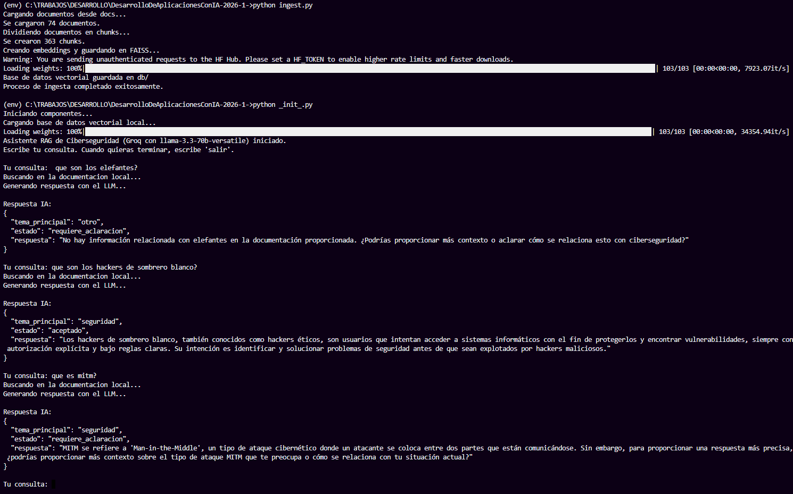

Lina Andrea Bello Ballen
Facultad de Ingeniería y Matemáticas
Ingeniería de Sistemas
Bogotá, Colombia
17 de mayo de 2026
Repo de GitHub: https://github.com/Landrea28/DesarrolloDeAplicacionesConIA-2026-1-/tree/ProyectoFinal
El presente proyecto desarrolla un Asistente RAG (Retrieval-Augmented Generation) enfocado en ciberseguridad, diseñado para solucionar la ineficiencia en la búsqueda manual de información técnica. Al aprovechar una base de datos vectorial local y modelos de Inteligencia Artificial generativa, el sistema ingesta extensas normativas y manuales privados para emitir clasificaciones y respuestas estructuradas y precisas. Esto minimiza el riesgo de "alucinaciones" inherente a los modelos comerciales, optimizando el tiempo de respuesta de los analistas frente a incidentes críticos de seguridad.
El núcleo del sistema está construido sobre las siguientes tecnologías y librerías especializadas:
llama-3.3-70b-versatile), utilizado para la generación de respuestas en formato estructurado (JSON).all-MiniLM-L6-v2, responsable de la vectorización semántica de los textos.Para el desarrollo, depuración y despliegue del proyecto, se emplearon las siguientes herramientas de apoyo:
Para cumplir con los más altos estándares de ingeniería, el pipeline consta de dos grandes subsistemas asíncronos apoyados en componentes técnicos altamente acoplados:
ingest.py)PyPDFLoader y TextLoader): Componentes encargados de parsear el sistema de archivos local (docs/) para extraer el texto crudo de manuales en PDF y archivos Markdown/TXT de forma dinámica.RecursiveCharacterTextSplitter): Divide los documentos largos en fragmentos manejables de 1000 caracteres, aplicando un chunk_overlap de 200 caracteres para asegurar que no se pierda contexto semántico entre cortes de párrafos continuos.HuggingFaceEmbeddings): Instancia del modelo all-MiniLM-L6-v2 que se ejecuta 100% de manera local, transformando cada "chunk" en un vector denso.FAISS): Base de datos vectorial que recibe los vectores generados, los indexa matemáticamente y los persiste localmente en el disco duro (directorio db/)._init_.py)response_format={"type": "json_object"}) a devolver un objeto rígido. Este módulo asegura un esquema ordenado e interoperable (tema principal, estado de la solicitud y respuesta técnica).RAG es un paradigma de IA que mitiga la falta de conocimiento actualizado de los Modelos de Lenguaje Grandes (LLMs). Funciona acoplando un motor de búsqueda sobre una base de conocimiento privada. En lugar de forzar a la IA a contestar desde sus datos de entrenamiento estáticos, el sistema primero recupera la literatura relevante en tiempo real y condiciona al modelo a razonar exclusivamente sobre ella.
Un embedding es la traducción de un texto en un vector de alta dimensionalidad. Las redes neuronales sitúan conceptos afines cerca uno del otro en este espacio matemático. Por ejemplo, "fallo de red" y "problemas de conectividad" compartirán proximidad vectorial. Esto habilita búsquedas por intención o significado, superando las limitaciones de la búsqueda tradicional por palabras clave.
Para validar la efectividad del RAG, se emplean los principios del marco RAGAS (RAG Assessment), evaluando pilares como: la Fidelidad (si la respuesta proviene estrictamente de los documentos y carece de invenciones), la Relevancia de Respuesta (si contesta exactamente lo que se preguntó), y la Precisión del Contexto (si los archivos extraídos por la base de datos realmente contienen la respuesta buscada).
La evaluación del sistema durante su desarrollo se realizó a través de un esquema Few-Shot Prompting, midiendo de manera empírica la capacidad del asistente para respetar el formato JSON estricto. Se simularon escenarios típicos de un Centro de Operaciones de Seguridad (SOC) comprobando la taxonomía de la respuesta y la exactitud del motor vectorial frente a comandos confusos o ambiguos del usuario.
El código fue desarrollado bajo una arquitectura modular. Un script independiente (ingest.py) absorbe el coste computacional de generar los embeddings de la documentación, aislándolo de la latencia del chat. El núcleo interactivo reside en _init_.py, donde se despliega un bucle de retención de estados diseñado para mantener el hilo de la conversación y parsear las excepciones del formato JSON.
La arquitectura inicial planteaba un uso centralizado mediante APIs comerciales convencionales. Para aumentar la privacidad y el control, se migró inicialmente al ecosistema local (Ollama). Sin embargo, esto generó cuellos de botella de memoria RAM. La refactorización definitiva implementó la API de Groq, trasladando el peso de la inferencia a LPUs ultrarrápidas, mientras el alojamiento de los documentos confidenciales, los vectores y las búsquedas semánticas se mantuvieron firmemente bajo un esquema 100% local.
El asistente demostró un tiempo de respuesta end-to-end significativamente optimizado. Las pruebas con consultas de redes y vulnerabilidades fueron clasificadas correctamente bajo la taxonomía de ciberseguridad esperada. Además, la estructura de salida JSON fue robusta a lo largo de las iteraciones, permitiendo la escalabilidad e interoperabilidad con futuras interfaces gráficas.
Durante el desarrollo se evidenció que la segmentación de documentos con superposición (chunk_overlap) es de vital importancia; sin ella, conceptos clave partidos a la mitad provocan pérdida de contexto semántico. Adicionalmente, el traslado de la carga inferencial a Groq comprobó que el verdadero limitante de rendimiento en arquitecturas RAG no es la base de datos vectorial local, sino la latencia en la generación de tokens.
A continuación, se presentan las capturas correspondientes al funcionamiento final y estabilizado del proyecto en el entorno de desarrollo:

Figura 1. Interacción con el asistente principal (_init_.py). Se observa la recepción de la consulta del analista, la búsqueda en la documentación y la respuesta estructurada del modelo LLM cumpliendo estrictamente con el formato JSON condicionado.
Como podemos observar en los resultados, para esta entrega final migramos de Ollama a Groq. Inicialmente usamos el modelo local, pero consumía demasiados recursos y, al no contar con una tarjeta gráfica dedicada, el rendimiento era muy lento. En un punto intentamos usar Gemini, pero también tardaba bastante en responder y presentaba problemas al cargar contextos muy extensos. Por esta razón nos decidimos por Groq, que ofrece una excelente capacidad de tokens gratuitos y un rendimiento que resultó ideal para el proyecto.
Durante las pruebas validamos su comportamiento fuera de contexto: al preguntarle sobre elefantes, el modelo respondió claramente que no existía información relacionada en la documentación. Esto demuestra que no está inventando datos (alucinaciones) y que realmente responde con base en los archivos cargados.
Por otro lado, cuando le preguntamos sobre hackers de sombrero blanco, el sistema identificó que era un tema de ciberseguridad porque los manuales subidos hablan sobre los distintos perfiles de hackers. Como la pregunta fue muy concreta, la respuesta generada fue igualmente clara y al punto.
Finalmente, al hacer una prueba preguntando por "Man in the Middle" usando solo sus iniciales y sin mucho contexto, el modelo logró relacionarlo con la ciberseguridad. Sin embargo, dada la ambigüedad de la consulta, el sistema pidió una aclaración adicional solicitando más detalles. Esto evidencia que el asistente prefiere asegurarse de entender la intención del usuario antes de dar una respuesta equivocada.
La implementación del Asistente RAG para Ciberseguridad ha validado ser una solución robusta para la reducción de fricción operativa en el acceso dinámico al conocimiento interno. El formato determinista JSON asegura que el sistema sea agnóstico e interconectable.
Como trabajo futuro, se proyecta: